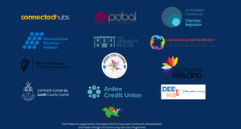
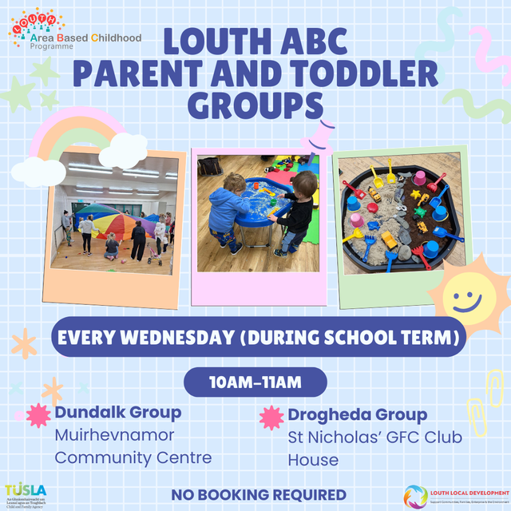
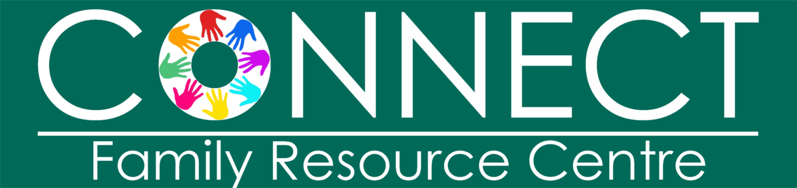

Parent-and-toddler Classes in Louth
Explore 14 Parent-and-toddler classes for kids in Louth, Ireland. Compare schedules, ages and pricing below, or contact a provider directly to book.

Ardee Parent & Toddler Group
Calling all parents in Ardee - join our vibrant Parent and Toddler Group, where laughter, learning, and lasting friendships bloom. Watch your little ones explore, learn, and make new friends in a safe and stimulating play area filled with toys, games, and activities designed to spark joy. While your little adventurers engage in playful exploration, seize the opportunity to connect with fellow parents, share stories, exchange tips, and build a supportive network in a relaxed and friendly atmosphere. Joining gives you community connection with other parents in your area, socialisation for children to share and play together, and parental support through shared experiences, advice and tips. Location: Market Street, Ardee. Time: every Friday, 10am-12pm (during term time). Cost: €2 per family. Contact: 0874266206.
View full details →Blackrock Louth Parent, Baby & Toddler Group
Blackrock Parent, Baby and Toddler Groups in Louth is the perfect place to meet new people and let your baby/kid have a play and make new friends. The group is for babies to 5 years and operates throughout the year. Location: Blackrock Community Centre, Sandy Ln, Haggardstown, Blackrock, Co. Louth, A91 ED0F. Time: every Friday, 10.30am-12pm, throughout the year. Cost: €2 per family. Contact: 085 8223004.
View full details →Carlingford Cooley Parent, Baby & Toddler Group
Carlingford Cooley Parent, Baby and Toddler Group welcomes newcomers, open to mammies, daddies, grandparents, childminders, aunts and uncles. Grab your little ones and join us for some fun - lots of toys for the kids to play with while the grown-ups enjoy tea/coffee and toast. The group also hosts themed events for Halloween and Christmas, and has an active Facebook page. Location: St Mary's Parochial Hall, Cooley, R175, Monksland, Co. Louth. Time: every Wednesday, 10-11.30am (during term time). Cost: €3 per family. Contact: 085 705 9539.
View full details →Clogherhead Parent, Baby and Toddler Group
Clogherhead Parent, Baby and Toddler Group was set up 20 years ago and is still going strong. If you are a parent, grandparent or childminder and are free on a Thursday morning, call into the Community Centre for a chat and a cuppa. It's a relaxed environment for adults to meet each other and for children to play and have fun. Location: Community Hall, Chapel Rd, Callystown, Clogherhead, Co. Louth. Day/Time: every Thursday (school term), 9:30-11.30am. Cost: €3 per family.
View full details →Drogheda/Dundalk Parent & Toddler Groups -FREE
Libraries across Louth offer Parent, Baby and Toddler Groups - a selection below. Drogheda Library Parent and Toddler Group: with plenty of toys and noisy books to choose from, this is the ideal way to introduce your little ones to the library while providing a safe space for them to make new social connections, and for parents, guardians and childminders to do so too. Location: Drogheda Library, Stockwell Lane, Drogheda, A92 PY20. Time: every Thursday, 10am-12pm (during term time). Cost: free. Contact: 041-9876162. Drogheda Baby Book Club: no booking required, come along for a morning of stories and songs for you and your little one. Location: Drogheda Library, Stockwell Lane, Drogheda, A92 PY20. Time: usually the first Tuesday of the month at 10.30am (during term time). Cost: free. Contact: 041-9876162. Dundalk Library Parent and Toddler Group: join other parents, childminders and caregivers for a morning filled with toys, books and fun - the perfect way for your little one to connect with other children their age, while parents, childminders and caregivers connect with each other. No booking required, and all children must be supervised by an adult for the duration of the morning. Suitable for children under 4. Location: Dundalk Library and Library HQ, Roden Place, Dundalk, A91 RC44. Time: every Thursday, 10am-12pm (during term time). Cost: free. Contact: 042-9353190 or libraryhelpdesk@louthcoco.ie. Dundalk Baby Book Club: open to everyone, and library members can borrow a copy on the day of the book being read - a lovely bonding opportunity for you and your baby. Location: Dundalk Library and Library HQ, Roden Place, Dundalk, A91 RC44. Time: usually the first Wednesday of the month at 10.30am (during term time). Cost: free. Contact: 042-9353190 or libraryhelpdesk@louthcoco.ie
View full details →
Dundalk Parent & Toddler Group - Redeemer Family Resource Centre
Dundalk Parent, Baby and Toddler Groups in Louth is hosted by the Redeemer Family Resource Centre. Join us every Thursday morning at the Redeemer Family Resource Centre for a fun-filled Parents & Toddlers group - a fantastic opportunity to bond with your little ones, make new friendships, and share parenting tips in a warm, welcoming environment. Sessions are packed with engaging activities, story time, and play, all completely free. Whether you're a first-time parent or have a few little ones, we'd love to see you there. Location: Redeemer Family Resource Centre, Beechmount Drive, Cox's Demesne, Dundalk. Time: every Thursday, 10.30am-12pm, during term time. Cost: free per family. Contact: admin@redeemercentre.com
View full details →
FREE Parent and Toddler Groups (Dundalk and Drogheda)
Join other parents and toddlers for a morning of fun - a great opportunity for toddlers to interact with their peers and for parents to connect with others in the community. Every Wednesday morning (during the school term), 10-11am. No booking required, feel free to drop in. Dundalk Group: Muirhevnamor Community Centre. Drogheda Group: St Nicholas GFC, Rathmullan.
View full details →FREE Parent and Toddler Groups (Dundalk and Drogheda)
Join other parents and toddlers for a morning of fun - a great opportunity for toddlers to interact with their peers and for parents to connect with others in the community. Drogheda Group: St Nicholas GFC, Rathmullan, every Wednesday morning (during the school term), 10-11am. Dundalk Group: Muirhevnamor Community Centre, every Wednesday morning (during the school term), 10-11am. No booking required, feel free to drop in.
View full details →Kilcurry Parent & Toddler Group- Kilcurry Family Resource Centre
Kilcurry Parent, Baby and Toddler Group is hosted by Kilcurry Family Resource Centre. Join us for fun, crafts and storytelling - mums, dads, grandparents and carers all welcome. Pop along and let the little ones have a play, with guaranteed tea/coffee and great chats. For kids up to preschool age. Location: Kilcurry Family Resource Centre, Church Road, Lennonstown, Co. Louth. Time: every Friday, 9.30-11am (during term time). Cost: €2.50 per adult. Contact: 042-9339310.
View full details →Louth Village Parent, Baby & Toddler Group
Louth Village Parent, Baby and Toddler Group, also known as the Teddy Bear's Club, welcomes mums, dads, grandparents and childminders with babies and children under 5 years to pop along. Babies and toddlers can enjoy a space where they can develop their social and play skills. Location: St Mochtas National School, Feran Dr, Richard Taaffes Holding, Louth, A91 AE79. Time: every Wednesday, 10-11am (during term time). Cost: unknown. Contact: 085-8000318.
View full details →
Moneymore Drogheda Louth Parent, Baby & Toddler Group
Moneymore, Drogheda Parent, Baby and Toddler Group is hosted by Connect Family Resource Centre. Location: Sluagh Hall, Moneymore, Drogheda (Special Olympics Building). Time: every second Tuesday of the month, 10-11am, throughout the year. Cost: €2 per family. Contact: (041) 9846608.
View full details →Moo Music Northeast
Our Baby Moo classes offer some one-to-one time with your baby, enjoying sensory play with our catchy music, meeting new friends and watching your baby develop lots of new skills. Suitable from newborn until pre-walking. Our Mixed Moo classes are suitable for little ones aged 0-5, great for siblings and friends of different ages to enjoy together. Caregivers remain at the session with their little one. Come join the Moosical fun.
View full details →Philipstown Baby and Toddler Group
Playgroup in Philipstown, open to babies and toddlers. The class is free and operates all year. Every Wednesday, 10.15am-12pm, in St Kevin's Community Centre, Philipstown, Dunleer, Co. Louth.
View full details →Move To Improve - Carrickmacross, Drogheda
Our Super Saturdays are the perfect way to keep your child active, engaged, and motivated outside of their regular school routine, with a wide range of sports, games and activities to ensure a fun-filled 75 minutes, including athletics, basketball, dance, football, tennis, GAA and rugby.
View full details →